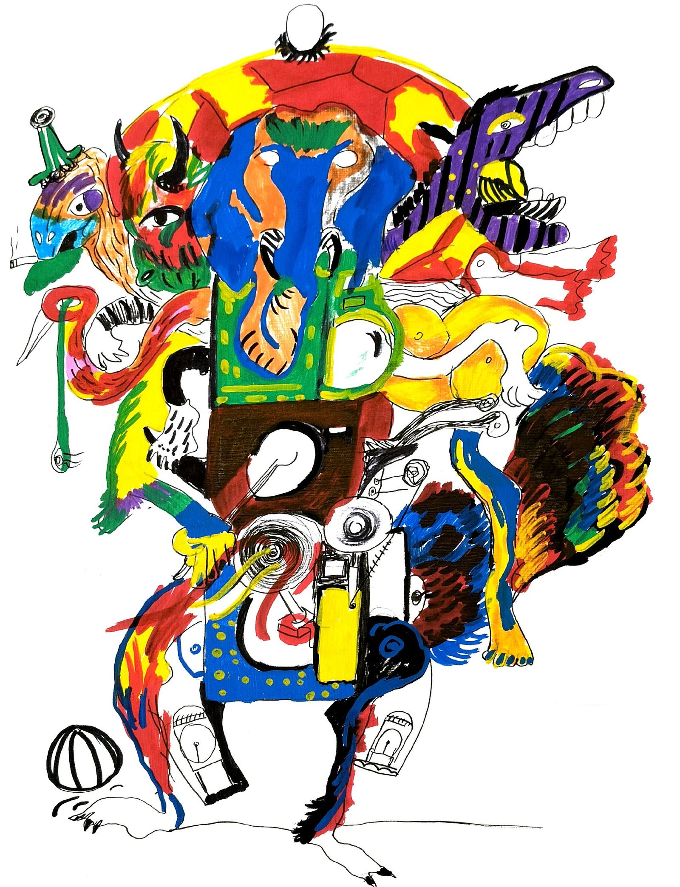
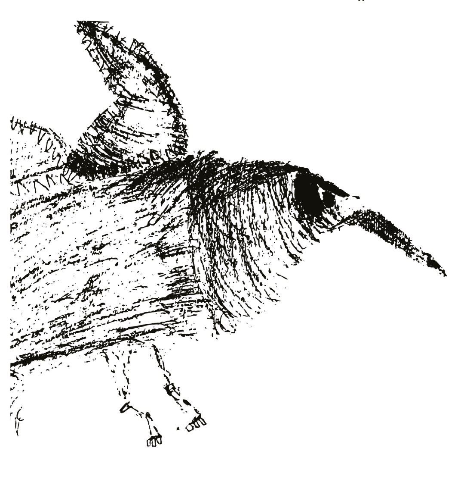
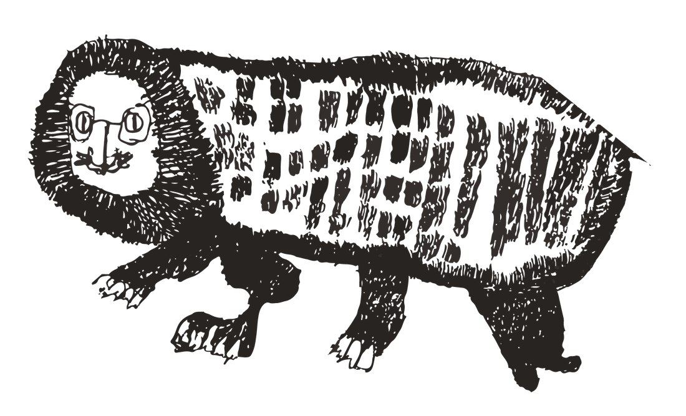
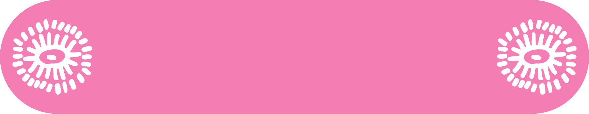
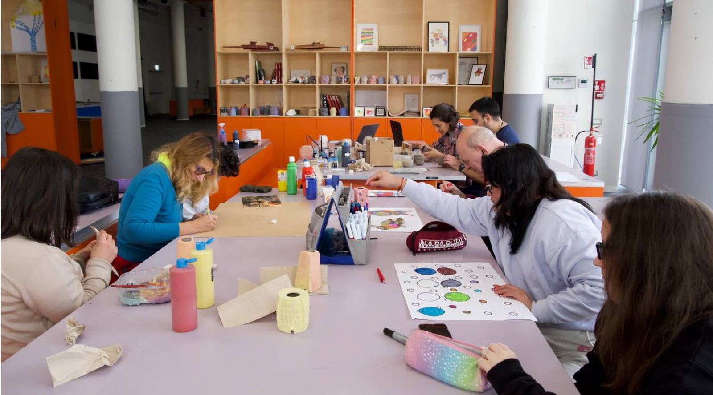

Un luogo dedicato alle persone neurodivergenti che desiderano esprimersi attraverso l’arte, in un ambiente accogliente, libero e rispettoso della propria unicità.

Qui non esistono modi giusti o sbagliati di creare.
Ogni percorso artistico nasce dalla sensibilità e
dall’immaginario di ciascuno.
L’atelier è aperto tre giorni a settimana
e la frequenza viene costruita insieme, nel rispetto
delle energie e delle necessità individuali.
Mettiamo al centro il benessere psicologico,
l’ascolto e la cura delle relazioni.
Ogni materiale, idea o intuizione può diventare
occasione di espressione, ricerca e scoperta di sé.



Entra in BRUT